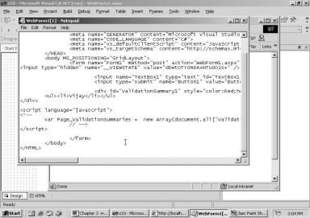
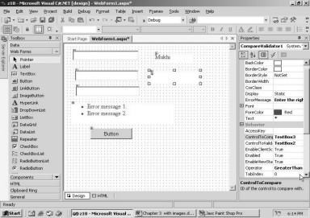
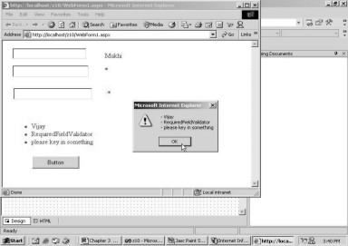
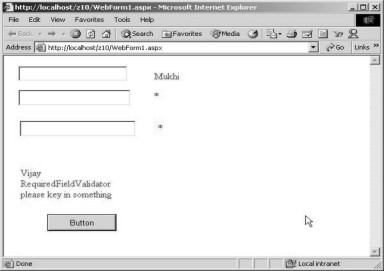

3. Building Web Applications
The Internet has sown the seeds
of a new series of web-based products. Today, Web Applications have become the
toast of the town. There is a remarkable dissimilitude between a Windows
Application, which we studied in the earlier chapters, and a Web Application.
The best approach to appreciate this difference would be to first develop a web
application, observe its output, and then, identify the features that are at
variance with a Windows Application.
Close all the open windows in
Visual Studio.Net framework and select the File - New - Project menu option. In the New Project
dialog box, select Visual C# Project in the Project Types pane and ASP.NET Web
Application in the Templates pane. On selecting the ASP.NET Web Application
option, the value of the location gets updated. It no longer refers to any
directory on the hard disk; instead, it displays the URL http://localhost. We
change the name to z3, and retain the default value of the location. This is
shown in the screen 3.1.
|
Screen 3.1 |
In order to connect to any site
on the net, the word 'http' must precede the site address. The word 'http',
which stands for Hyper Text Transfer Protocol, encompasses the rules that must
be followed while surfing the net or the World Wide Web (WWW). Of late, WWW,
seems to stand for the 'World Wide Wait', since the Internet seems to be
getting slower by the day ;-).
As a rule, the word 'http',
followed by a colon and two slashes has to be placed before the name of the
computer that we want to establish a connection with. This computer could be
named as Microsoft, Yahoo or Disney etc. Every computer can refer to itself by
the name of 'localhost'. So, http://localhost will refer to the server running
on our own machine, and the Web Application named z3 will be served off it.
In Windows 2000, the Web server,
better known as the Internet Information Server (IIS), must be installed and
running. Most often, the server is installed during the installation of Windows
2000. This server, by default, stores all the files that are to be sent across,
in the sub-directory c:\inetpub\wwwroot. Thus, the files that our project or
solution brings into existence, will be present in a sub-directory named z3,
located within c:\inetpub\wwwroot.
When you click on the OK button,
you will realize that, the time duration of the wait is longer than what was
consumed by the Windows Application. The screen that appears next is shown in
screen 3.2.
|
Screen 3.2 |
A blank screen with some message
text and the Properties window are visible. The property of bgColor, which is
currently highlighted, has a button containing 3 dots. Clicking on the button,
will bring up a Color dialog box, as is shown in screen 3.3.
|
Screen 3.3 |
In the dialog box, the box
containing the White color is shown selected. This is so because, the current
background color assigned to the document is White. You would also observe that
the Color box has the hex number #ffffff.
The # sign stands for the
hexadecimal notation, while the rest of the number denotes the color that we
have chosen, in hex. If you cannot decipher hex, welcome to the real world!
Select the Yellow color and
click on the OK button. The Color box will now displays the number #ffff66. The
bgColor property in the Properties window also shows this hex number.
Run the program using the F5
key. After a brief wait, the browser emerges with a Yellow background. This is
displayed in screen 3.4.
In the browser window, the
address bar displays the URL as follows: http://localhost/z3/WebForm1.aspx.
|
Screen 3.4 |
A URL is another word for 'Uniform
Resource Locator', which refers to the name of the machine. The above URL
merely signifies that the contents displayed are from a file called
WebForm1.aspx, which is located in the z3 sub-directory.
A browser can only comprehend
HTML files. HTML is an acronym for 'Hyper Text Markup Language'. In Internet
Explorer, click on the View menu and select Source, this option is shown in
screen 3.5.
|
Screen 3.5 |
The html file has the following
contents:
<!DOCTYPE HTML PUBLIC "-//W3C//DTD HTML 4.0 Transitional//EN" >
<HTML>
<HEAD>
<meta name="GENERATOR" Content="Microsoft Visual Studio 7.0">
<meta name="CODE_LANGUAGE" Content="C#">
<meta name="vs_defaultClientScript" content="JavaScript (ECMAScript)">
<meta name="vs_targetSchema" content="http://schemas.microsoft.com/intellisense/ie5">
</HEAD>
<body MS_POSITIONING="GridLayout" bgColor="#ffff66">
<form name="Form1" method="post" action="WebForm1.aspx" id="Form1">
<input type="hidden" name="__VIEWSTATE" value="dDwtMTI3OTMzNDM4NDs7Pg==" />
</form>
</body>
</HTML>
An HTML file is enclosed within
the tags named html and /html. The start tag is a word enclosed in angular
brackets, and the end tag contains the same word, preceded by the / symbol. The
HEAD tag of an html file is never displayed in the browser window, since it
contains Header Information for the browser. The tag usually contains 'meta
data', which is data that describes other data. There are a large number of
tags available in html, and one of them, which has been extensively utilized
here is, the 'meta' tag.
The meta information can be
employed by servers and clients, to identify, catalog and index contents of
html files. A search engine uses the meta tag to catalog and index web pages.
The 'name' attribute in the tag refers to the name of an entity, and the
'content' attribute refers to its value. The programmer enjoys the freedom to
determine the name of the entities, as long as the server is cognizant of its
meaning and value. On our machine, it is the Microsoft IIS server that
generates the html file. Hence, it is able to identify the meta names and the
values that have been assigned to them, with effortless ease .
The features, which are to be
displayed in the window, are impounded within the body tag. The attribute
MS_POSITIONING determines whether the text is to be entered directly, or by
employing the Screen Painter. The bgColor attribute of the body tag is assigned
the value of Yellow from the bgColor property.
Every html page consists of
elements such as, head, body, form etc. The basic idea behind using a form is
to group html elements together, under a single roof. The form is assigned the
name 'form1', and the method attribute is assigned the value of 'post'. The
value assigned to the 'method' attributes establishes whether the data received
by the browser is to be sent to the server as a separate packet (post), or as
part of the URL (get).
The 'action' attribute of the
form tag is assigned a file name on a server. The server processes this file,
and thereafter, reverts the data back to the browser. The file name assigned to
the 'action' attribute is WebForm1.aspx, which is akin to what the solution has
created. The name/id assigns a name to the form.
The 'input' tag is used to
display html controls. The 'type' attribute of the input tag influences the
type of control. If the value assigned to type is 'text', then a textbox is
displayed; if the value assigned is 'button', then a button is displayed. If
the value assigned to type is 'hidden', it will not display the control on the
html page. However, its name and value will be dispatched to the server each
time.
The server needs to identify the
browser every time the browser connects to it. This is on account of the fact
that, the HTTP protocol is 'stateless', i.e. it is unable to recollect any
previous connections of the same browser. Therefore, to maintain state, each
aspx / html file is assigned a unique number, thus enabling the server to
identify every connection it makes with each browser. This facilitates in
preserving values of the html controls across connections.
If you are unable to grasp what
is being said here, you can open up a browser window and connect to yahoo.
Then, you may enter any word in the search engine and start searching for it.
Thereafter, if you open another browser window and connect to yahoo, you will
notice that the input box of the search engine is blank in the freshly opened
browser window. This is so, because the server recognizes the new copy of the
browser that has been activated on the same machine, as a new client.
ASP.Net makes web programming
incredibly tractable, since the web server is inordinately intelligent, and is
capable of maintaining a record of the browser's actions.
Now, close the browser and
return back to Visual Studio.Net. Then, click on the HTML tab. The screen that
appears is shown in screen 3.6.
|
Screen 3.6 |
Barring the first line, the rest
of the text remains identical to the html code, as reflected in the browser
source. Thus, we can concurrently view the html code generated by Visual Studio.Net
for the browser.
Now, switch back to Design Mode
by clicking on the design tab.
Firstly, scroll down the
Properties window until the property PageLayout comes into view. Now, click on
the down arrow to see two types of layouts. Select the layout as FlowLayout.
This layout allows you to enter characters directly into the Screen Painter.
|
Screen 3.7 |
Once this is effected, you may click
in the window and enter the names 'Vijay' and 'Sonal Mukhi', as seen in screen
3.8.
|
Screen 3.8 |
Thereafter, run the application.
The results are evident in screen 3.9. Nothing could be more easy and
unexacting!
Close the browser window. In
Visual Studio.Net, select the HTML tab. You will see the newly introduced text
circumscribed within the tags form and /form.
|
Screen 3.9 |
<form id="Form1" method="post" runat="server">
Vijay and Sonal Mukhi
</form>
Switch back to the Design Mode by
clicking the Design tab and highlight 'Vijay'. Then, click on the font
drop-down box, as shown in screen 3.10, and select 7 as the font size.
|
Screen 3.10 |
This change will be reflected
instantaneously on the screen, as shown in screen 3.11. Here, the selected
words are displayed in a bigger sized font. The remaining text retains the
original font size.
|
Screen 3.11 |
When you select the HTML tab,
you will notice that the 'font' tag makes an appearance in the form that
encloses 'Vijay'. Any change made in the form window gets reflected in the HTML
file.
<form id="Form1" method="post" runat="server">
<FONT size="7">Vijay</FONT> and Sonal Mukhi
</form>
Henceforth, we shall avoid
exhibiting the tags form and /form, since all the modifications effected to the
form, get inserted within them.
The Font tag has an attribute
named 'size', which is allocated a value of 7, since we chose the number 7 from
the drop-down listbox. The /font tag resets the size to normal for the
remaining text. Then, press F5 to run the program, and see the changes
reflected in the browser.
Close the running application
and enter the Design Mode. To begin with, in the Properties windows, reassign
the value of 'Grid Layout' to the PageLayout property. Then, bring in the
ToolBox, which resides in the View menu-option. The product is astute enough to
appreciate that the project is a Web Application, and not a Windows
Application. Hence, it displays the tab Web Forms in the toolbox. Please note
that the drag-and-drop feature needs to be extensively used while working with
Web-based controls. Non-usage of this feature is one of the most common
mistakes committed while designing such forms.
|
Screen 3.12 |
The task on hand is to insert a
textbox and a button into the web page. Hence, the value of the PageLayout
property has been changed to GridLayout, since it is easier to work in this
layout, while placing controls in the form. Now, click on the textbox and
drag-and-drop it within the window. The properties window displays its id as
'TextBox1'. Then, click on the button and drag-and-drop it within the form. The
name assigned to this control is Button1.
|
Screen 3.13 |
Press F5 to run the program and
you will arrive at screen 3.14, which displays a button and a textbox. If you
click on the button, nothing new gets displayed on the screen to catch your
eye. However, in the status bar, a progress band appears.
|
Screen 3.14 |
Now, close the application and
select the html tab. The following snippet of code has been incorporated in the
file.
<asp:TextBox id="TextBox1" style="Z-INDEX: 101; LEFT: 38px; POSITION: absolute; TOP: 98px"
runat="server"></asp:TextBox>
<asp:Button id="Button1" style="Z-INDEX: 102; LEFT: 166px; POSITION: absolute; TOP: 196px"
runat="server" Text="Button"></asp:Button>
The code divulges the fact that
two web server controls, asp:TextBox and asp:Button, which produce a textbox
and button respectively, have been introduced. The controls are termed as
'webserver controls' since they are preceded with the text asp:.
The id field, which is similar
to the one seen in the Properties window, is used to access or change the
properties of the web server controls. The LEFT, the TOP and the POSITION
attributes help the browser to determine the position of the control on the
window. In the past, html did not
support the feature of positioning and locating a control. However, in the
present day, with the help of the above tags, the controls can be placed at
specific positions. The 'runat' attribute requests the server to keep track of
the previous value of the control, since this indeed is a time consuming task.
Select the Design Mode and
double click on the button. This action
shall take you directly into the Code Painter, as is seen in screen 3.15. This
is similar to what we had done earlier in the Windows Application. The only
change here is that the file extension has been changed from aspx to aspx.cs.
An aspx extension is provided to a Web Form written in ASP.Net, while the cs
extension refers to the C# programming language.
|
Screen 3.15 |
We enter the following statement
at the cursor position:
TextBox1.Text = "Vijay Mukhi";
The textbox with the id of
TextBox1 has a property called Text and it is initialized to a string, Vijay
Mukhi.
Since we have assigned a value
to the Text property, whenever the button is clicked, the assigned value shall
be displayed to the user in the textbox. So, let us now verify this by running
the program, and then clicking on the button. The screen 3.16 shows 'Vijay
Mukhi' in the textbox.
|
Screen 3.16 |
When we click on the Refresh
button, the textbox does not become blank anymore, since the web-control
textbox is in a position to recollect the text that was entered previously.
Thus, web-server controls are capable of 'maintaining state' across
connections. The web server retains information about the values assigned to
the controls.
After having acquainted ourselves
with the basics related to web controls, let us now graduate on to a practical
application. In this example, we will use the same data grid control, which was
used earlier in the Windows Application, and build a Web Application. As
always, we would request you to close all windows, so that we can start afresh.
First, select the menu options
of File - New - Project. In the Project Type pane, select Visual C# Project,
and in the Template Pane, select ASP.Net Web applications. Name the project as
z4, and click on the OK button. When the menu option of View - Properties is
selected, the Properties window gets displayed. When the Toolbox option is
selected from the View menu, the ToolBox window shows up.
Once the stage is set, we select
the data tab in the ToolBox window and drag-and-drop the OleDbDataAdapter
control into the Form Painter. As experienced earlier, the control locates
itself at the bottom portion of the screen, where invisible controls generally
reside, and the wizard gets activated. Thus, whatever we have learnt in the
world of Windows Applications, also holds true in the world of Web
Applications.
Now, the rudimentary steps of
the wizard have to be followed. As always, we ignore the text displayed on the
first screen, and just click on the Next button. The subsequent screen that
emerges, requires a connection. Instead of creating a new connection, we click
on the drop-down listbox and choose the connection name associated with the
pubs database. This is shown in screen 3.17.
|
Screen 3.17 |
Click on the Next button to move
on to the next screen, which deals with the Query type. The default option of SQL
is acceptable to us. Hence, we leave all the entries as they are, and click on
the Next button. In case your memory has abandoned you, go back to the previous
chapter, where we have explained all these steps in detail.
Enter the Select statement shown
below at the cursor position and then move onto the next screen:
Select * from authors
'Select' followed by a * sign
implies that, all the fields in the table have to be included. It is one of the
many short forms or wildcards provided by SQL. It averts the need of listing
out all the field names individually. The above Select statement will obtain
data for all the fields from the 'authors' table. When you click on the Finish
button on the last screen in the series, you will notice the Adapter object and
the Connection being created in the pane.
Once the connection has been
established, the Dataset has to be created. For this, click on the Data menu
and select Generate Dataset. This leads to the Generate Dataset dialog box. We
retain the name of the new dataset as 'dataSet1', to which, the 'authors' table
will be added. Then, we click on the OK button.
On naming the dataset as
dataSet1, the name 'dataSet11' will show up in the Properties window. Note the
subtle addition of the extra '1' at the end of the name.
After the three controls of
Adapter, Connection and Dataset have been created, the backstage activities
reach completion. The pending task is that of the datagrid control, which will
show-case the data retrieved by the SQL statement. So, we click on the Web
Forms tab in the toolbox, select a data grid and then drag-and-drop it within
the Screen Painter. You should augment the size of the control so that it
covers maximum real estate of the screen. This will ensure that maximum data
will be displayed on the screen.
The datagrid is assigned the
name of 'DataGrid1' for internal reference. The property DataSource is assigned
the value of 'dataSet11'. This is the dataset that we have just created.
Presently, we have only one dataset. Therefore, the data grid reflects the
fields only from this dataset. The controls are shown in screen 3.18.
|
Screen 3.18 |
Double click on the blank Form
area (make sure that you do not click on the data grid) and add the following
lines of code in the Code Painter:
oleDbDataAdapter1.Fill(dataSet11);
DataGrid1.DataBind();
The first line executes the Fill
function from the OleDbDataAdapter control. As the function requires a dataset,
the dataSet11 is passed to it as a parameter. The DataGrid displays the data
from this dataset only when the function DataBind is called off it.
The C# code is placed in such a
way that it gets executed each time the form is loaded. Thus it is the
programmer who decides when certain code should be called. If the same code
snippet is placed after double-clicking on a button, the code would be
executed, only when the user clicks on the button. Run the application to
arrive at the screen 3.19, which contains a data grid, brimming with data.
|
Screen 3.19 |
In the Internet Explorer
browser, select the View menu, followed by the Source option to see the HTML
file that generated the data grid.
|
Screen 3.20 |
In the source file, there is no
tag called Data Grid. Instead, it is the html tag of table, which encloses the
data retrieved from the authors table. Thus, if the authors table contains
10000 records, the browser would receive an html file having 10000 table rows.
The server is fully conversant with the limitations of the web browser. Hence,
it sends only html files across. The aspx file is finally converted into an
html file, and then it is sent across.
Now, close the running
application, i.e the browser and also the editor, displaying the source code.
Then, in the aspx file, select the HTML tab in the framework. The line
displayed below is the code introduced for the datagrid control.
<asp:DataGrid id="DataGrid1" style="Z-INDEX: 101; LEFT: 26px; POSITION: absolute; TOP: 40px" runat="server" Width="365px" Height="253px" DataSource="<%# dataSet11 %>"></asp:DataGrid>
The asp:DataGrid tag conjures up
the above magic. The id assigned to it is 'DataGrid' and it is passed the
positional attributes, which we can safely ignore. The 'runat' attribute asks
the Web Server IIS to maintain state. The DataSource property in the properties
window was set to dataSet11, which is the name of the Dataset. Hence, it is
written here. The DataMember property
is optional, since there is only one table in the dataset. However, had we
explicitly set the table to authors, the datagrid control would have displayed
one more attribute of DataMember here. The web server, while parsing the aspx
file, converts this tag into the html tag of table, for the browser.
As an exercise, you can consider
the second example on relation object with two tables, and implement it as a
Web Application.
The major difference between a
Windows Application and Web Applicaiton is that, in case of the former, an
executable file gets generated, which has to be copied over to the target
machine. On the other hand, in order to execute a web application, there is no
need to copy anything to the target machine. All that the user is required to
do is, provide the URL of the server in the browser and point it to the file.
If you had to distribute an application to a 1000 employees, which of the above
two solutions would you implement? The answer obviously is heavily in favour of
a Web Based Application.
Let us now ponder over a
practical poser that most Web designers face.
The Web is used to display, as
well as, to glean information. For collecting information, a form has to be
displayed, which the user has to fill up. Thereafter, the data entered by the
user, has to be authenticated for accuracy and relevance.
For instance, while shopping on
the net, a form is displayed, which must be filled up with relevant address and
payment details. Or, for that matter, you may wish to place your resume on the
net. Another frequently used application is that of a search engine, where we
have to provide a word or phrase that the search engine can search for. Every
now and then, we see people filling up forms.
How do we ensure that the data
entered by them is in the appropriate format, before storing it in the
database? So, the next issue that we shall grapple with is the issue of
validation of data in a web application.
As done earlier, save all the
files and close the current application. Then, click on File - New - Project to
create a new project. Then, select the option of Visual C# project in the
Project Type pane, and select the option of ASP.NET Web Application in the
Template pane. Assign the name z10 to the application and then click on the OK button.
The names of projects have been selected arbitrarily by us and hence, they
don't have too much significance. Ensure that the Properties window and the
Toolbox window are visible.
From the Web Form category,
select the button control and place it in the Form Painter. Then drag-and-drop
a textbox. By default, this textbox is given the id of TextBox1.
A textbox is shown to the user,
so that data can be entered. In certain situations, it may be mandatory to
enter some data. Hence, suitable checks must be performed, and thereafter,
appropriate messages must be displayed, if the desired criterion is not met.
The text that is entered may be absolutely preposterous and meaningless, but
our primary concern here is, to ensure that some text is entered. We are not
concerned with the text quality. How do we go about building such an error
check in the application?
In order to implement such a
validation check, we first select the required Field Validator Control, and
then, drop it into the form. If the control is not visible, you may scroll down
and find it. The screen should now bear resemblance to what is revealed below.
The requisite field validator
control is required to check whether the textbox contains some text or not. To
do so, the property of ControlToValidate in the properties window has to be
initialized. Click on the down arrow visible in this property, and select
TextBox1 from the list of controls that are displayed. Since the textbox is the
sole control that can be validated, only a single item is displayed. This is
shown in screen 3.21.
|
Screen 3.21 |
Whenever an error comes about,
an error message is required to be flashed. In this case, on the occurrence of
an error, the value assigned to the Text property, gets displayed. Initialize
the Text property to 'Mukhi'. To display the error messages at the bottom of a
window in a control, the ErrorMessage property has to be initialized. Set the
value of this property to 'Vijay'.
If you carefully scrutinize the
Toolbox, you will come across a control called Validation Summary. Select this
control and drag-and-drop it into the form at the very bottom. The layout of
your screen should be as is shown in screen 3.22.
|
Screen 3.22 |
Press the function key F5 to run
the application. The output merely displays the textbox and the button. Then,
without entering any data into the textbox, click on the button. The screen
immediately transforms into what is shown in screen 3.23.
|
Screen 3.23 |
The word 'Mukhi' is displayed at
the position where we dropped the required field validator control. Good Error
Practice calls for the control to be placed on the right of the textbox. The
error messages can be distinctly identified, since they start with a * sign.
The error message 'Vijay', is displayed at the location of the Validation
Summary control. Thus, without having written a single line of code, we have
enforced a rule on the user.
The View - Source menu option in
Internet Explorer, exhibits a page containing code in the Javascript
programming language.
|
Screen 3.24 |
The question that now vexes our
minds is, 'What necessitates the presence of such a large amount of code, and that
too, in Javascript'?
Let us go back in time. In the
good old days, the user would fill up a form and then click on a button to
submit the data. This data would travel from the client browser, which could be
based in India, to the web server, which could be located in America. On
reaching the server, a program would then validate the data sent across, for
any errors. If any errors were to be found, the entire html would be returned
back with an error message. The html file that is reverted back, may or may not
have the form fields filled up.
In such a scenario, the workload
on the server is excessive, since the program not only has to detect the
errors, but also has to send the html file across, with the form fields filled
up. Moreover, it adds to the Internet traffic merely because the user did not
adhere to the server requirements.
Would it not be more sagacious
for the browser to check for errors and report them instantly, rather than just
juggle the data to and fro?
In this day and age, all browsers
understand a programming language called Javascript, created by Netscape. It is
a programming language that has been approved by the Worldwide Standards Body.
Whenever we come across a highly
interactive Web page, the likelihood of it being penned-down in Javascript, is
indeed very high. Microsoft also has a scripting language for the browsers
called VBScript, which is supported only by Internet Explorer. In due course of
time, we intend to explain the Javascript code generated above.
The html file that is sent
across by the server to the client browser, is completely unlike what the
server contains. In order to view it, close the application, and in the Design
Mode, select the html tab. The window will display the code that executes the
error validations.
<asp:TextBox id="TextBox1" style="Z-INDEX: 101; LEFT: 92px; POSITION: absolute; TOP: 36px"
runat="server" Width="170px" Height="26px"></asp:TextBox>
<asp:Button id="Button1" style="Z-INDEX: 102; LEFT: 133px; POSITION: absolute; TOP: 101px"
runat="server" Width="108px" Height="30px" Text="Button"></asp:Button>
<asp:RequiredFieldValidator id="RequiredFieldValidator1" style="Z-INDEX: 103; LEFT: 103px;
POSITION: absolute; TOP: 179px" runat="server" Width="200px" Height="27px" ErrorMessage="Vijay"
ControlToValidate="TextBox1">Mukhi</asp:RequiredFieldValidator>
<asp:ValidationSummary id="ValidationSummary1" style="Z-INDEX: 104; LEFT: 96px; POSITION:
absolute; TOP: 280px" runat="server" Width="253px" Height="133px"></asp:ValidationSummary>
The first two controls, i.e. the
button and the textbox, have already been addressed earlier. In the time to
come, we will show you code that has been generated, but only for those
controls that have not been touched upon earlier.
The RequiredFieldValidator
control has an id, which presently is inconsequential, since we do not intend
to refer to this control in our code. The attribute of ErrorMessage is assigned
the same value of 'Vijay', as initialized in the property window. The value
assigned to the Text property, is enclosed within the start and the end tags of
the control. The ControlToValidate property is given the name of the textbox,
i.e. TextBox1. Thus, the utility of a property window can now be appreciated,
since it precludes the essentiality of memorizing a legion of properties, which
a control possesses. Besides, it assigns default values to all the properties.
Furthermore, online context-sensitive help is also rendered to the control. It
is amazingly simpler to click on the drop down listbox and select a control,
rather than writing the relevant code manually. A GUI makes life a lot easier
for a novice, as well as, for the advanced programmer. We will explain the
ValidationSummary control in a short while.
Let us close the running application
and make a few modifications to the form.
Select the
RequiredFieldValidator control and then click on the down arrow for the display
property. There are 3 possible values displayed for this property, as is
evident from screen 3.25.
|
Screen 3.25 |
Select the value of 'None' and
then, press F5 to run the application. Click on the button, and you will see
the browser window, as shown in screen 3.26.
|
Screen 3.26 |
Only the error message in the
Summary Control gets displayed. Thus, we can fine tune the control and display
the error messages that seem appropriate. The html code will now show a
property called Display, containing a value of 'none'. In Visual Studio.Net,
reset the Display property to 'Static'.
On numerous occasions, the user
may selectively want to turn on and off, specific checks. Under normal
circumstances, we would have inserted a check box, which when selected, would
signify that the error check has been switched ON, otherwise it would be
considered to be switched OFF.
In order to disable the error
checks in Visual Studio.Net, every validation control has been allotted a
property called 'Enabled', which can be set to False. To ascertain this, select
the RequiredFieldvalidator control in the Design Mode, and search for the
property called Enabled, in the property window. Set it to False and then, run
the project.
Now, in the output browser, even
if you click on the button without entering any text in the textbox, no error
messages will be generated. It is so, because the validation control has been
disabled. Now, close the application and reset the enabled property to True.
|
Screen 3.27 |
When we had talked about
Javascript earlier, we had revealed facts as to how validating at the client
end, is much faster than doing so at the server end. The default validation is
accomplished at the client end because, the browser is capable of supporting a
Scripting Language, and the property EnableClientScript is True.
Now, set the value of this
property to False, and press F5 to run the program. In Internet Explorer, the
View-Source menu option will display code that is entirely at variance with
what we had seen earlier.
Close Internet Explorer and
Notepad and reset the validation back to the client. Irrespective of whether
the value of the property EnableClientScript is set to True or False, the
server will, in any case, validate the data.
This is because, a programmer
may choose to write a simple program or a URL, which may send the data directly
to the server, thereby, bypassing all the checks at the client end.
Thus, when client validation is set
to True, it implies that both, the client and the server, will validate data;
but when the value is False, only the server will be responsible to perform
these error checks.
|
 |
|
Screen 3.28 |
Next, click on the Toolbox,
select a textbox, and drag-and-drop it into the Form Designer. This newly
created textbox is assigned the name TextBox2. Then, select another textbox, and
drag-and-drop it inside the Form. This textbox is assigned the name TextBox3.
Thereafter, scroll down the toolbox until you come across a CompareValidator
control, and introduce this control into the Form too.
All these validators give an
appearance of glorified textboxes and their countenance has no physical
significance. Now, arrange your form so that it resembles screen 3.29.
|
Screen 3.29 |
Using these controls, we now
want to build a simple example, wherein a user will be asked to enter a
password. However, prior to commencing this task, we have to take a few factors
into consideration.
Firstly for the time being, the password
entered will be displayed in the text form in the textbox. Secondly, since a
password is a very crucial piece of information, it must be entered twice, to
avoid any ambiguity or errors during data entry. Thereafter, both the values of
the passwords must be compared for equality.
Therefore, we introduce a CompareValidator control, which is capable of
comparing values contained in controls.
In the property window of this
control, click on the Down Arrow of the property ControlToCompare, and select
'TextBox2' as the control, whose value is to be compared. Then, for the
property ControlToValidate, from the drop down list, select 'TextBox3' as the
control. Thus, the value contained in TextBox3 will be compared with the value
in TextBox2. The condition for performing these checks also has to be
specified.
|
Screen 3.30 |
Therefore, from amongst the six options
displayed in the drop down list for the 'operator', we select the option of
'Equal'. Since the Equal operator has been chosen, we are at liberty to
interchange the values assigned to the ControlToCompare and ControlToValidate
properties.
For the other conditions, we
have to be much more cautious. The text assigned to the 'errormessage' is as
follows: 'The two textboxes must contain the same values'.
Now, press F5, and in the
browser, enter the word 'abc' in the second textbox, and enter the word 'ab' in
the third textbox.
|
Screen 3.31 |
Thereafter, click on the button,
and observe the fireworks of error messages that are displayed on the screen.
The first textbox was left
empty. Hence, its validator reported an error. The second and third textboxes
do not contain the same values. Hence, the control also displays an error
message. The Summary Validator displays both the error messages. The text
assigned to each control gets displayed in close proximity to the textboxes.
Now, close Internet Explorer and revert to Visual Studio.Net Framework. The tag
that represents the Compare Validator in the html file, is as follows.
<asp:CompareValidator id="CompareValidator1" style="Z-INDEX: 107; LEFT: 242px;
POSITION: absolute; TOP: 175px" runat="server" Height="25px" Width="178px" ControlToValidate="TextBox3" ErrorMessage="the two text boxes must contain the same values" ControlToCompare="TextBox2">password</asp:CompareValidator>
As is always the case, the
modified properties, barring the operator property, are visible in the html
file. The html file that is generated is a reflection of the control properties
that have been altered. The CompareValidator control is not intelligent enough.
This can be inferred because, once we select the object for ControlToCompare,
the object should not be allowed to appear with ControlToValidate. It makes no
sense in comparing a control value with itself. This can be attended to in the
future versions of the product.
Delete the two textboxes by
selecting them and then, pressing the Delete key. Then, select the
CompareValidator and press the Delete key again. Now, click on the TextBox and
drag-and-drop it into the form. Then, scroll down the ToolBox and drag-and-drop
a CompareValidator into the form. Ensure that the CompareValidator control is
selected, and, select the option DataTypeCheck for the operator property, from
the list.
Furthermore, scroll down the
Properties window, till you arrive at the Type property. Click on the listbox,
and from the 5 available types, select the 'Date' type. For the ErrorMessage
property, assign the text 'Invalid Date', and for the text property, enter
'Date'. Finally, the last thing to be specified is the control to be validated.
Hence, select the ControlToValidate property and choose TextBox2 from the
listbox. This will ensure that the user enters a valid date.
|
Screen 3.32 |
Run the application, and in
Internet Explorer, click on the button.
|
Screen 3.33 |
We seem to have encountered a
bug. Instead of entering a date in the textbox, we had left it blank. On
clicking the button, this textbox was completely ignored, and no error was
reported. This is not a bug from Microsoft's point of view. Instead, it is a
validation feature of ASP.NET. If an object has to be validated for some data
input, then a 'Required Field Validator' must be assigned to that field.
Entering the value 'ddd' in the second field generates errors, as shown in
screen 3.34. The validation compels the user to enter data in the appropriate
format.
|
Screen 3.34 |
Now, if you type in the date
01/13/2001, no tremors will be felt in the framework. For those who are
strangers to the American System of dates, the default format is
'month/day/year'.
Now, close the application. In
the Form Design, delete both, the textbox and the Compare Validator Control. We
like to commence work on a clean slate each time.
In the next example, the
accuracy of the data entered into a particular textbox would depend on the
value entered in another textbox. For instance, an insurance policy is valid
for a certain duration of time. So, if a user enters the start date and the
maturity date, the maturity date must always be greater than the start date.
This is what we would validate.
First and foremost, two
textboxes and a Compare Validator Control are created in the Form Designer. The
property ErrorMessage is assigned the text 'The date entered must be greater
than the previous one', and the text property is assigned the * symbol. The
ControlToValidate property is initialized to 'TextBox3' from amongst the three
listed controls, as this is the control whose value is to be validated for
errors.
We initialize the property
ControlToCompare to 'TextBox2'. This is because, the value in this TextBox
shall be used to check whether a valid value has been entered or not. Since we
want the second date to be larger than the first date, we select the
'GreaterThanEqual' property operator. Finally, the Type property is initialized
to 'Date' because the values that would be entered in the two textboxes are to
be handled as dates.
|
Screen 3.35 |
Run the above program and enter the
date 01/20/2001 as the value of the second textbox, and the date 01/19/2001 as
the value of the third textbox. Since the date of 19th January 2001 is
obviously smaller than the date 20th January 2001, an error message is
generated when we click on the button. This is what meets the eye in screen
3.36.
|
Screen 3.36 |
If we change the second date to one
that is larger than the first one, e.g. 01/21/2001, the error shall vanish.
Thus, the main objective of the Compare Validator Control is to compare two
controls for a specified condition.
Close the running application
and in the Form Designer, delete the two textboxes and the Compare Validator.
Thereafter, drag-and-drop a textbox into the Form Designer. Also, select the
Compare Validator yet again, and drag-and-drop it into the Form.
At times, we get an impression
that writing a screen-based book is exceedingly more arduous than penning a
code-based book. This is because, in a screen-based book, we have to specify
each and every action every time, even though we may have mentioned it on
numerous occasions in the past.
In our next mini application, we
want the user to key in a number that is larger than 100. The value of 100 has
been arbitrarily selected. Change the ErrorMessage property to 'Value should be
greater than 100' and the Text property to *. From the drop down listbox for
the property ControlToValidate, choose the control 'TextBox2' from amongst the
two controls that are visible. In case you have overlooked it, the validation
controls are not displayed in the drop down listbox.
Next, Select GreaterThan as the
Operator property, and Integer as the Type property. Finally, initialize the
new property named ValuetoCompare to 100. For the first time, we are assigning
an absolute value, and not the name of a control.
|
Screen 3.37 |
Press F5 and enter 30 in the
textbox. Now, if you click on the button, you see the error message, containing
the text assigned by us.
|
Screen 3.38 |
The origin of the error is
attributable to the fact that, the value we entered was less than 100. Thus, we
have demonstrated as to how it is possible to compare the value that has been
entered, with an absolute value.
Close the running application.
In the Form, drag-and-drop another textbox. This TextBox is assigned the name
'TextBox3'. Then, select the Compare Validator, and initialize the property
ControlToCompare to 'TextBox3', which is the value of the newly introduced
TextBox control. Amend the Error message to read as follows: 'Enter the right
value'.
|
 |
|
Screen 3.39 |
Run the application. In the
third textbox, enter the value 50, and in the second textbox, enter the value
60. Now, if you click on the button, no errors will be displayed. This is because
the number 60 is larger than 50, and this satisfies the specified condition. If
you reverse the values, you will
witness the errors shown in screen 3.40.
|
Screen 3.40 |
In this example, we have used
both, an absolute value as well as a control for validation purposes. The
Validator uses the control value and ignores the absolute value. The designers of
the software product could have used the absolute value instead. But, they
opined that the value of a control gets entered at run time, and therefore, its
value was accorded higher priority than the absolute value.
If we leave the third textbox
blank, then, regardless of the value that we assign to the second control, no
error will be generated. This is because, a blank value does not generate any
errors. Now, close Internet Explorer and delete the two textboxes and the
Compare Validator.
Once the controls have been
deleted, drag-and-drop a textbox into the Form Designer. Thereafter, scroll
down the Toolbox, select the RangeValidator Control and drag-and-drop it into
the form too. Do not make any amendments to the ErrorMessage property, and
assign a * symbol to the Text property. Assign the value of 'TextBox2' to the
ControlToValidate property from the dropdown list.
Next, the MaximumValue property
is assigned a value of 0, while the MinimumValue property is assigned a value
of 100. The 'Type' property is initialized to 'Integer', thereby, indicating
that numbers shall be entered in the textbox.
|
Screen 3.41 |
Now run the above application.
On seeing the error message that is generated, you may be under the impression
that we may have written this book in a frazzled state of mind, in the middle
of the night.
|
Screen 3.42 |
The screen 3.42 clearly
indicates that the maximum value cannot be less than the minimum value. Thus, this
proves that, even though we may write code with our eyes closed, Visual
Studio.Net always keeps a vigil. It scrutinizes the values assigned to the
properties, and if they are not appropriate, an error or exception is thrown.
Close Internet Explorer, and in
the Properties window, interchange the values of the properties MinimumValue
and MaximumValue to 0 and 100, respectively. Now, run the project, and enter
200 in the textbox, and click on the button.
|
Screen 3.43 |
Since the value 200 does not lie
between 0 and 100, an error is flagged. If you now enter the number 100 in the second
textbox, the error disappears, since the value lies between the Minimum and
Maximum range, inclusive of both the extreme values. Thus, the Range Validator
Control, as the name suggests, ensures that the value that we type in, falls
between a specified range of values.
Having discerned the concept of
Range Validator control, let us now move on to the Regular Expression
Validator. Delete both, the textbox and the Range Validator. Once this is done,
drag-and-drop a textbox into the Form. Then, scroll down the ToolBox and select
a Regular Expression Validator. Bring this control into the Form. Leave the
value assigned to the ErrorMessage property unchanged, and like before, place a
* symbol for the Text property. Now, assign the value of TextBox2 to the
property ControlToValidate, by selecting it from the drop down listbox.
We believe that the Regular
Expression Validator is one of the most important validators available. This is
on account of the help it renders, in writing complex validations, which were
just not possible earlier, without tons of code.
While filling up forms on the
Internet, most people do not enter relevant data in the correct format. If they
are asked to enter a zip code consisting of 6 digits (as in India), they are
bound to enter anything that suits their fancy. Same is the case for an e-mail
address, which requires data to be entered in a certain format. Thus, these
error checks assume great significance. The Regular Expression Validator
control is just the perfect antidote for this malady.
If you click on the three dots
displayed with the property ValidationExpression, you will arrive at the screen
3.44. Here, we witness a dialog box containing a listbox and a textbox. In the
listbox we select the Custom item, and in the textbox, we enter the following
text: Ab[0-9].
|
Screen 3.44 |
When you click on the OK button,
you will see text displayed, which is the same as the value of the property
ValidationExpression.
Press F5 to run the project.
Then, in the textbox, enter the expression Ab8, and click on the button. No
errors are seen, which means that the text entered in the textbox is in
consonance with what the validator had expected. Now change the capital letter
'A' to the small letter 'a', and click on the button. You would now observe an
error on the screen.
|
Screen 3.45 |
Let us investigate the motive
for this error.
A regular expression consists of
normal text and a large number of special characters, which are generally
referred to as meta-characters. Whatever is part of the regular expression
syntax has to be entered, as it is. Thus, the user has to type in the capital
letter 'A', followed by the small letter 'b'. Anything specified within square brackets
represents a range. In our example, the third character must be a number,
ranging from 0 to 9. The first value that we had entered i.e. Ab8, matched the
expression. Hence, no error was reported.
In the second case, the first
letter 'a' itself does not match the format. Hence, the error was displayed.
Try entering an expression like Ab99, and an error is bound to be generated, as
only one digit is permitted. The above regular expression can be used to compel
the user to enter data, such as a customer id, in a specific format.
Now, close Internet Explorer and
select the property ValidationExpression. Enter the expression A[0-9]*. Press
F5 to run the project. The above expression permits the user to enter as many
numbers as desired.
The * sign symbolizes zero or
more occurrences of the immediately preceding character. Since the preceding
character is a range of numbers, any number can be entered, and as many numbers
as desired, can be entered. If you enter characters such as A or A1 or A12, no
errors will be generated. If you replace A[0-9]* with A*, you are at liberty to
enter as many A's you want.
Try out the following
expressions to grasp and appreciate the power of this control.
A[0-9]+ : The plus sign represents either one or
many occurrences of a digit, after the character. Therefore, the expression A,
by itself, generates an error, since the plus sign makes it mandatory to enter
at least one digit. This is the only real difference between a plus sign and a
star sign.
A[0-9]? : The ? sign stands for either zero or one
occurrence. Thus A and A1 are acceptable, but A11 is not, since more than one
digit is present.
[0-9]{6} : A zip code in India is exactly six
digits long. Thus, this regular expression is well suited for a zip code. The
curly braces enclose a number, which denotes the number of occurrences of the
preceding character that are required. Thus, in this case, it is mandatory to
enter six digits.
[0-9]{4,6} : The format of the curly braces with a
comma represents a range. Thus, we can type in any digit, but the total number
of digits must range from 4 to 6. Thus 1234, 12345 and 123456 will match the
condition. Thus,
*
is a short form for {0,}
+
is a short form for {1,}
?
is a short form for {0,1}.
When no number is specified
within the curly brackets, it signifies an indefinite quantity.
\d{2} : The \d is a short form for a digit, and is similar to [0-9].
Thus, the above condition expects only two digits. This expression could also
be written as [0-9]{2}.
We could write a complete book
on Regular Expressions, but we would confer this privilege unto others. The
next thing that we do is, click on the 3 dots (
) of the property
ValidationExpression. Then, in the dialog box, we choose the French Postal Code
item. The value of the property now displays \d{5}, which clearly indicates
that the French Postal Code contains only 5 digits.
We will now elucidate some of
the predefined regular expressions, to enable you to understand the practical
significance of regular expressions.
\d{3}-\d{2}-\d{4} - is a US
Social Security number that comprises of 3 digits, a minus sign, two digits, a
minus sign and 4 digits e.g. 123-45-6789.
[0-9]{5}-[0-9]{4} | [0-9]{5} -
is a valid US Zip code that can contain any 5 digits, followed by a minus sign,
followed by either 4 digits or 5 digits. The OR sign | represents the concept
of 'either', in the conventional sense.
^(vijay|sonal)[0-9] - The parenthesis ( ) group things together.
Thus, this expression will check if the data entered matches with 'vijay' or
'sonal', followed by a single digit. Thus, 'sonal1' or 'vijay8' will match the
expression, but 'a1' or 'sonal' will not. The ^ sign means 'from the
beginning', and the $ sign means 'at the end'.
http://([\w-]+\.)+[\w-]+(/[\w-
./?%&=]*)? is an expression that represents an internet URL. All URLs start
with the expression http://. The \w matches with any letter of the alphabet,
either small or capital, any digit or the underscore sign. Thus, it is a short
form for the expression [A-Za-z0-9_]. The plus sign signifies one or more of
the preceding character. We start a URL with words such as 'www' or 'ftp', and
end it with a dot. Since the dot is a special character, it is preceded with a
backslash, to overrule its special meaning. This can be repeated multiple
times, but the sequence must be repeated at least once. Also, after specifying
the machine name, parameters can be passed to the URL. These parameters are to
be separated with the & symbol. Besides, the name-value pairs are equated,
using the = sign.
Reserved characters are
'escaped' using the % sign, followed by a hex number. Since this can range from
zero to infinity, the * symbol has been used.
For an E-Mail address, the regular
expression is as follows:
\w+([-+.]\w+)*@\w+([-.]\w+)*\.\w+([-.]\w+)*
We can start an E-Mail address
with any combination of letters and digits, but there should be at least one
letter or digit. Hence the symbols \w and + have been used. The E-Mail address
can also contain the following symbols:
-
+
.
(dot)
Therefore, these characters are
placed within square brackets. Then, the symbol @ is provided, followed by the
machine name. The machine name may have any number of dots in it, and it is very
similar to a URL.
Having talked in detail about
the Regular Expression, let us move ahead to another validator control. To do
so, select the textbox and the regular expression validator and then, delete
both of them. Thereafter, drag-and-drop two textbox controls into the Form. The
ids assigned to them will be TextBox2 and TextBox3. Then, bring in the
RequiredFieldValidator control into the form. Leave the value assigned to
ErrorMessage property unchanged, and place a * for the Text property. Assign the
value of TextBox2 to the ControlToValidate property.
Once again, bring in another
RequiredFieldValidator control. Change the property ErrorMessage to 'Please key
in something', and place a * for the Text property. Choose 'TextBox3' from the
drop down listbox, for the property ControlToValidate.
Now, select the Summary control
on the form, and assign the value of True to the property ShowMessageBox, which
accepts either a value of True or False. Press the F5 key to run the program,
and then, click on the button.
|
 |
|
Screen 3.46 |
Screen 3.46 shows the same data
that is displayed in the Summary Control, in a MessageBox.
Now, close Internet Explorer,
and in the Summary Control, change the property of ShowMessageBox to False. In
the Display Mode property, select the option of List, from amongst the three
available options. Press F5 to run the program, and click on the button to
arrive at screen 3.47.
|
 |
|
Screen 3.47 |
The difference lies in the way that
the error messages are displayed. The bullets are no longer visible. Instead,
the errors are displayed in a list form.
Before we conclude this chapter,
click on the DisplayMode property for the last time, and select the option of
'Single Paragraph'. Press F5 to run the program, and in Internet Explorer,
click on the button. The screen 3.48
now displays the errors in a single paragraph.
|
Screen 3.48 |
This chapter prescribed an overdose of the validation checks that can be performed on the web controls. There are many more error checks in Visual Studio.Net that are still not elucidated as we feel that you have been made comfortable to try them out in your spare time.